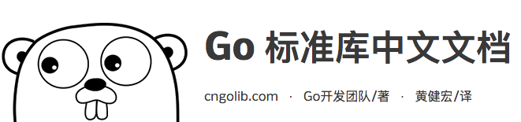

您好！¶
欢迎来到《Go web 编程》的读者服务网站， 这里会展示关于《Go web 编程》一书的相关信息。
目录以及翻译进度¶
进度说明：未开始 -> 翻译进行中 -> 已译完，等待复检 -> 已完成
| 章数 | 标题 | 翻译进度 |
|---|---|---|
| 译者序 | 未开始 | |
| 前言 | 未开始 | |
| 致谢 | 未开始 | |
| 关于本书 | 未开始 | |
| 关于本书封面插图 | 未开始 | |
| 1 | Go 与 web 应用 | 已译完，等待复检 |
| 2 | ChitChat 论坛 | 已译完，等待复检 |
| 3 | 接收请求 | 已译完，等待复检 |
| 4 | 处理请求 | 已译完，等待复检 |
| 5 | 内容展示 | 已译完，等待复检 |
| 6 | 储存数据 | 已译完，等待复检 |
| 7 | Go web 服务 | 已译完，等待复检 |
| 8 | 应用测试 | 未开始 |
| 9 | 发挥 Go 的并发优势 | 翻译进行中 |
| 10 | Go 的部署 | 已译完，等待复检 |
| 附录 | 安装并设置 Go | 已译完，等待复检 |
作者简介¶

Sau Sheong Chang 现在是新加坡能源有限公司的数字技术总裁， 在此之前他做过 PayPal 的消费者工程经理， 也有过在 HP 、 Yahoo 以及 Garena 等公司的任职经历。
Sau 作为贡献者活跃于 Ruby 社区以及 Go 社区， 除了为开源项目贡献代码之外， 他还创作过好几本技术图书， 并在各种技术聚会和大会上发言。
要了解关于 Sau 的更多信息， 请访问他的个人主页： https://about.me/sausheong
译者简介¶

黄健宏（huangz）是一位 90 年出生的计算机图书作者和译者， 他分别是《Redis设计与实现》一书的作者以及《Redis实战》一书的译者。
除了已出版的两本作品之外， 黄健宏还创作和翻译了《Go标准库中文文档》、 《Redis命令参考》、 《SICP解题集》等一系列开源文档。
要了解关于黄健宏的更多信息， 请访问他的个人主页： http://huangz.me
对本书的赞誉¶
随着 Go 语言变得日益重要， 对优质 Go 教程的需求也在与日俱增， 本书的出现可谓恰逢其时。 —— Shaun Lippy ，Oracle 集团
无论你是一位经验老到的 gopher ， 还是一位刚开始接触 Go 的 web 开发者， 这都是你不可或缺的一本书。 —— Benoit Benedetti ，尼斯大学
关于如何编写以及如何部署 Go web 应用， 你想要知道的全部知识都已经囊括在这本书里面了。 —— Brian Cooksey ，Zapier 公司
本书堪称 Go web 开发方面的权威入门教程。 —— Gualtiero Testa ，Factor-y S.r.l. 公司
相关资源¶
《Go web 编程》在 Manning 出版社的主页： https://www.manning.com/books/go-web-programming
《Go web 编程》的配套源码： https://github.com/sausheong/gwp
关联项目¶
为了更好地翻译《Go web 编程》， 译者对书中用到的标准 Go 库的文档也进行了翻译， 并将这些译文放到了《Go 标准库中文文档》项目中， 该项目可以通过以下地址进行访问： http://cngolib.com/
讨论 QQ 群¶
对本书或者 Go 语言有兴趣的朋友， 可以加入到以下 QQ 群， 与译者以及众多群友一起进行技术讨论：
- IT 技术讨论 2 群，群号 186200307
- IT 技术讨论 1 群，群号 398976550
因为 1 群人数已经饱和，推荐朋友们优先加入 2 群。